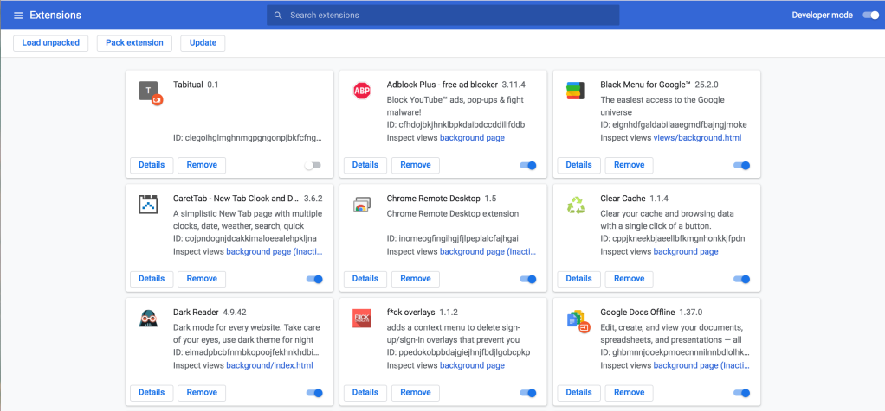

2021
New Tab
Ritual- “the performance of more or less invariant sequences of formal acts and utterances not entirely encoded by the performers” (Rappaport p. 24)
We perform rituals on a daily basis, whether we realize it or not. Some are meticulously thought out and planned events such as weddings, Christmas, court procedures, prayers, etc., while others are performed on a rather subconscious level. Actions as mundane as waving to a friend or sipping coffee while checking your emails every morning can be considered ritualistic activities even though they lack the formality of what is commonly considered to be a ‘ritual’.
This project aims to explore one of the more subconscious rituals but adds an element of intentionality to see how it would affect one’s day in terms of their mindset, emotions, and actions.
The ritual activity I chose to focus on is the action of opening up a new tab in the Chrome Browser.
Opening up a new browser tab is usually the first step we take to get anywhere/do anything on the internet. Because of this, people have purposely made available the option to customize one’s new tab, aesthetics-wise and functionality-wise. Personally, I greatly value this feature of Chrome, always looking for new Chrome extensions that can improve my digital experience and changing my Chrome theme every few months.
these are only ~1/3 of the extensions I have installed... 
After doing a quick Google search, I found out that there are 39,263 Chrome themes and 137,345 Chrome extensions available for installation from the Chrome Web Store as of 2021 (Dean).
The seemingly endless variety and supply of tools to customize one’s Chrome Web Browser and New Tab only goes to show its importance and impact on one’s daily life.
Building off of that idea, I wanted to create a Chrome extension that had the qualities of a common New Tab extension such as location, weather, date, and time, but also add a daily insight and journaling feature, perhaps putting more emphasis on this added feature as well.
The daily insight is inspired by oracles and prophecies, however, instead of giving the user a prediction, it generates a poem that prompts users to ponder about their day in a way that corresponds to the relatively ‘nonsensical’ poetry. This nonsensical nature is created using Markov chain text generation with 5 different poems: “If You Forget Me” by Pablo Neruda, “Housekeeping” by Natasha Trethewey, “No Man is an Island” by John Donne, “The Peace of Wild Things” by Wendell Berry, and “There Will Come Soft Rains” by Sara Teasdale.
The journal section was implemented for users to write down their thoughts, ideas, and emotions. Because the text is not stored in any way after it is released, I hoped that it would create a judgment-free, stress-free, personal, and convenient space in contrast with the data collecting web browsers and apps that we use on a daily basis. Also, regardless of the user taking into account the daily insight or not while writing in this journal, it would still allow for self-reflection and the release of pent-up emotions/thoughts.
Name of Extension: Tabitual
Logo:
Demo:
My experience using this extension:
Though I did not put as much intention as I had expected into reading,
analyzing, and interpreting the poetry, it was reassuring in a way to
have that option available to me. Similar to having a tarot deck and
the knowledge on how to use it, I knew that I could consult this daily
insight feature if had a burning question in my mind or felt unsure about
something, or even if I was just bored (which I did). When I did use this
feature and took the time to think about my day in the context of the
poem, it often lead me to reflect on topics/situations that weren’t
necessarily on my mind at the moment. Because of the random phrases
linked together in these poems, I felt that it also sparked more
creativity within me, which could also be due to the 5 poems I chose.
Even when I overlooked both the daily insight and journal sections,
every time I opened up a New Tab to check the time/weather or to
procrastinate, the visual component of it being there still reminded
me to reflect and be mindful of what I was doing. I think that the background
visuals of floating translucent colorful orbs being so hypnotic to me also
aided in that as well.
Moving forward...
Bibliography
Dean, Brian. “Google Chrome Statistics for 2021.” Backlinko, 8 Mar. 2021, backlinko.com/chrome-users.
Parrish, Allison. “N-Grams and Markov Chains.” Decontextualize, http://www.decontextualize.com/teaching/rwet/n-grams-and-markov-chains/.
Rappaport, Roy A. Ritual and Religion in the Making of Humanity. Cambridge University Press, 1999.